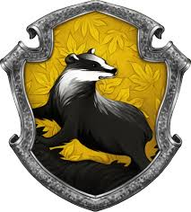

| Hogwarts House | Hufflepuff |
| Illvermony House | Thunderbird |
| Patronus | Aardvark |
| My Wand | Sycamore Wood, 11 inch length, Phoenix feather core, and a surprisingly swishy flexibility |
| All About Sycamore | It's eager for new experiences, loses brilliance in mundane activities | It's ideal owner is curious, vital, adventurous
|
| All About Phoenix | This is the rarest core type. They are capable of the greatest range of magic. |
| Thunderbird | a beast that can create storms as it flies |
| Hufflepuff | Trustworthy and loyal |
| Favorite Class | Potions and Transfiguration |
| Place on Quidditch Team | Chaser |
| Year | Just finished 5th year going into 6th year |
This is my life in Harry Potter. I love Harry Potter soo soo soo soo much. It has always been something that I loved to read and connect with. I love the cast of the movies and how they were able to capture the magic in the books and bring them to the big screen. Because of Harry Potter, Emma Watson became one my most favorite actress and human being of all time.
